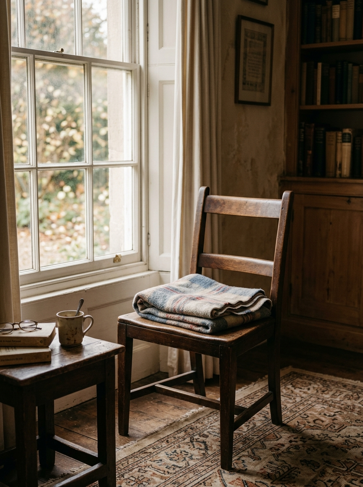
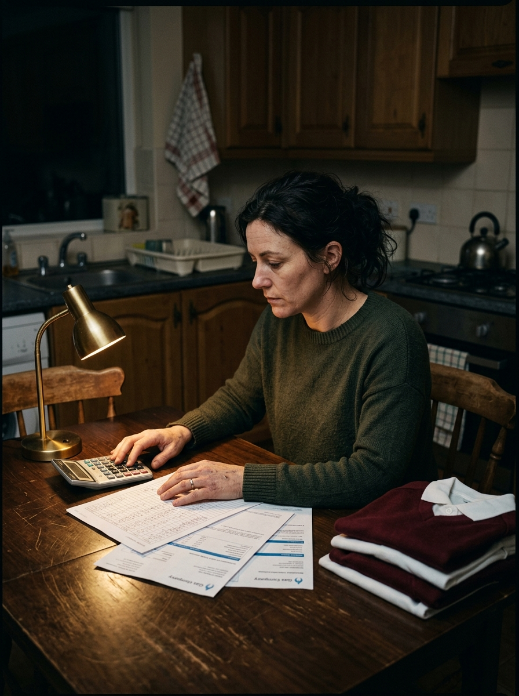

North Wing · Room 01
The Quiet Room
Stillness & Solitude“Where time forgets how to rush, and silence learns to speak.”
Enter this room →Some things are easier to write than to say.
Step across the threshold into rooms carved from quietness, memory, and unspoken truths. Inside, five rooms shelter eleven poems from Collection I: Things We Carry.
“Written for the hearts still learning how to say what they feel.”
The threshold of Poem Parlor. Opening the door reveals the five emotional chambers sheltering the poems of Collection I: Things We Carry.
“Where time forgets how to rush, and silence learns to speak.”
Enter this room →“Photographs rest in open drawers; what is gone remains kept.”
Enter this room →“A patient warmth that asks for nothing more than honesty.”
Enter this room →“Doors stand half-open to morning; courage to take the next step.”
Enter this room →“Sunlight across worn boards; grace dressed in faithful things.”
Enter this room →Collection I · Issue 001
“Stories, poems, and quiet truths for the hearts still learning how to say what they feel.”
A visual companion to Things We Carry. Every image tells part of the story behind its poem.

“Some spaces are not made empty by furniture. They are made empty by people.”
Read the poem →
“Because there is nothing small about a mother who keeps her family alive with faith and sacrifice.”
Read the poem →Poem Parlor was built for the feeling that arrives before speech: the ache, the awe, the tenderness, the pause. It is a digital literary house where poems live in rooms, letters rest at the windowsill, and memories keep their own soft light.
This is not a conventional blog. It is a small world meant to be wandered slowly, quietly, and with attention.